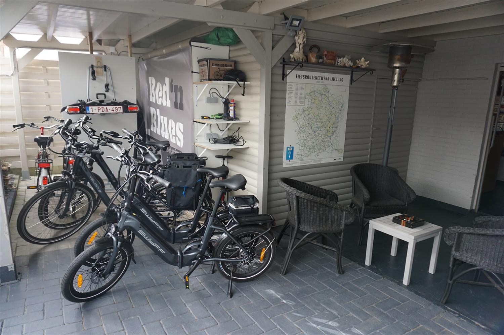

FIETSEN
We mogen ons vanaf nu ook officieel Fietslogiesnoemen! Wij stellen 6 fietsen ter
beschikking van onze gasten (2 gewone fietsen en 4 E-bikes - waaronder 2 vouwfietsen)

Zo kan u het fietsroutenetwerkgaan ontdekken vanuit Bed 'n Blues, of als u de
vouwfietsen met de auto wil meenemen ligt de hele Limburg in uw bereik. Dankzij de
knooppuntenkaart kan u uw fietsroute uitstippelen, en daarnaast zijn er eveneens verschillende routes ter beschikking.Wie zelf zijn fiets meebrengt kan deze in onze
fietsenstalling zetten, waar ook laadpunten voorzien zijn. Redenen genoeg dus voor een weekendje fietsen in Limburg.
Dit project werd mede mogelijk gemaakt dankzij Provincie Limburg

